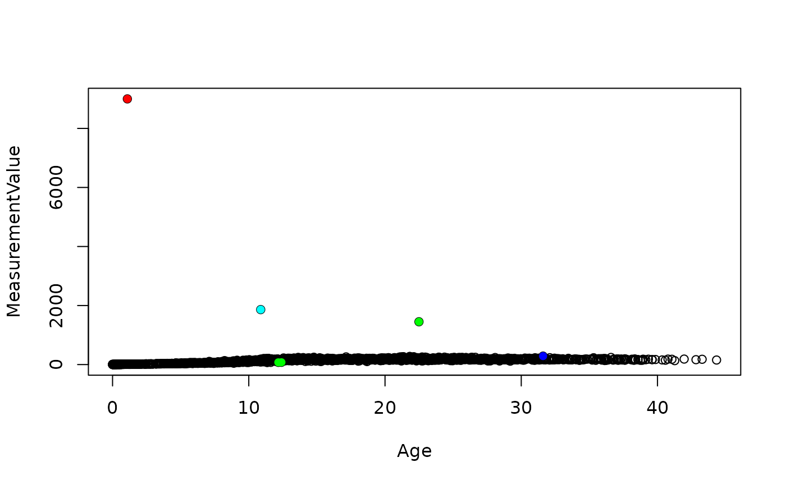

This function is used to prepare weight and length dataset. It unify the unity used, select clean measures and add individual age at each measure. This function takes as arguments:
data: the weight or length data from ZIMScoresubse: the core data of the species from ZIMSCaptiveBirths Should captive born individuals be
included, only? Default = TRUEInclUnkSexShould undetermined sexes be included Default
= FALSEmindate Earlier date to include data
(‘YYYY-MM-DD’)MeasureType Name of the type of measurements that
should be included. Default = NULL, all measurement type are
included.type Either ‘weight’ or ‘length’.The function returns the data frame including selected measures, plus individual birth date and individual age at each measure
data(raw_weights)
data(core)
data_weights= Gro_cleanmeasures(raw_weights, core,
CaptiveBirths = TRUE,
MeasureType = 'Live weight',
InclUnkSex = FALSE,
mindate = "1980-01-01")This function removes the outliers from a dataset of weights. This function takes as arguments:
data_weight a data frame that must include at least the
columns MeasurementValue and Age.taxa the name of the taxa studiedageMat the MINIMUM age at sexual maturity. The function
takes as threshold 1.2*ageMat to differentiate juveniles (still growing)
from adultsmaxweightvariableid name of the column including individual IDs.
Defaut = “anonID”. It must also be a column of
data_weight
minq Sensitivity of the function to remove outliers
using percentiles, between 0 and 1. Default = 0.025IQR influences the sensitivity of the function to
remove outliers using generalized additive model of growth. It should be
above 1 Default = 2.75. A higher number makes the function less
sensitive to find outliers.perc_weight_min Minimum percentage of weight that an
individual can naturally lose or gain during a year . Default = 0.2
(20%)perc_weight_max Maximum percentage of weight that an
individual can naturally lose or gain during a year . Default = 2.5
(250%)This function follow 4 different steps to highlight outliers: 1/ It
removes the measures higher than the argument maxweight
(Instead of using the OrdMag Fernando that was removing only very
extreme values, a maximum value was set for each taxa). In the default
case, default values are in kilograms and are set at 7000kg for
Mammalia, 200kg for Aves, 1500kg for Reptilia, 100kg for Amphibia,
1000kg for Chondrichthyes and 500kg for Actinopterygii. 2/ Independently
on adults and juveniles, it uses the function Gro_Rout_quan() to removes
outliers based on percentiles on adults and juveniles. It uses sliding
windows of age for juveniles. You can choose the number of intervals
used for the sliding windows using the argument
Ninterval_juv. 3/ Independently on adults and juveniles, it
uses the function Gro_lin_ind() to build generalized additive models for
each individual trajectories with at least min_Nmeasures
measures and remove outliers based on the residuals of the models. 4/ It
uses the function Gro_lin_ind() to build a common generalized additive
model for all growth trajectories and remove outliers based on the
residuals of the models.
The function returns:
KEEP a numeric
vector of 1 and 0 indicating the measures to keep. The 0 signal
outliers. Other additional columns keep1, keep2, keep3 indicates the
individuals highlighted as outliers (0) in steps 1 to 3.
data(weights)
weights = Gro_remoutliers(weights, taxa = "Mammalia", ageMat = 10)
plot(MeasurementValue ~Age, data = weights)
#Show the four steps used to remove outliers
#1/ using maximum value
points(MeasurementValue ~Age, data = weights%>%dplyr::filter(keep1==0),
col = "red", pch = 16)
#2/ using Inter quartile range
points(MeasurementValue ~Age, data = weights%>%dplyr::filter(keep2==0, keep1==1 ),
col = "green", pch = 16)
#3a/ using individual trajectories
points(MeasurementValue ~Age, data = weights%>%dplyr::filter(keep3==0, keep2==1),
col = "cyan", pch = 16)
#3b/ using global log-linear model
points(MeasurementValue ~Age, data = weights%>%dplyr::filter(KEEP==0, keep3==1),
col = "blue", pch = 16) 
#Checking outliers highlighted in Individual trajectories
anon = unique(weights$anonID[weights$keep3==0 & weights$keep2==1 ])
plot(MeasurementValue ~Age, data = weights%>%
dplyr::filter(keep2==1, anonID == anon))
points(MeasurementValue ~Age, data = weights%>%
dplyr::filter(keep3==0, anonID == anon, keep2==1),
col = "cyan", pch = 16)This functions removes all values lower and higher than the median value multiplied by how many times the (100-q)th percentile is higher than the qth percentile of the distribution of weights.
The measurement values must be positive
z = c(rnorm(100,5,1), runif(3,40,100))
Gro_Rout_quan (z, minq = 0.05)
#> [1] 1 1 1 1 1 1 1 1 1 1 1 1 1 1 1 1 1 1 1 1 1 1 1 1 1 1 1 1 1 1 1 1 1 1 1 1 1
#> [38] 1 1 1 1 1 1 1 1 1 1 1 1 1 1 1 1 1 1 1 1 1 1 1 1 1 1 1 1 1 1 1 1 1 1 1 1 1
#> [75] 1 1 1 1 1 1 1 1 1 1 1 1 1 1 1 1 1 1 1 1 1 1 1 1 1 1 0 0 0This function takes as arguments:
data_weight a data frame that must include at least the
columns MeasurementValue and Ageand
anonID
perc_weight_min Minimum percentage of weight that an
individual can naturally lose or gain during a year. Default = 0.2
(20%)perc_weight_max Maximum percentage of weight that an
individual can naturally lose or gain during a year. Default = 2.5
(250%). This value is used only after 1 year oldIQR influences the sensitivity of the function to
remove outliers. It should be above 1 Default = 1.5. A higher number
makes the function less sensitive to find outliers.remove_ext Do you want to keep the two first and two
last observations of individual trajectories? These points may often be
highlighted as false outliers. Default = TRUEtraj_ind Do you want to build a model at the level of
the individual trajectory Default = TRUE. If yes, each individual
trajectory must have at least 5 measures.The function uses build generalized additive model of the measurement
value in relation to age. It flags as outliers all measures for which
the residuals from the linear model are above IQR * the inter quantile
interval (quantile(0.9) - quantile(0.1)) of the residuals.
perc_weight_min and perc_weight_max limit the
values that must be considered as outliers.
data(weights)
#We use only trajectories for which the number of individual datapoints is > 6
weights <- weights%>%
dplyr::group_by(anonID)%>%
dplyr::mutate(nb= dplyr::n())%>%
dplyr::ungroup()%>%
dplyr::filter(nb >6)
weights_ind <- weights%>%Gro_lin_ind(traj_ind = TRUE)
as.numeric(weights_ind$Keep2)
#> [1] 1 1 1 1 1 1 0 1 1 1 0 1 1 1 1 1 1 1 1 1 1 1 1 1 1 1 1 1 1 1 1 1 1 1 1 1 1
#> [38] 1 1 1 1 1 1 1 1 1 1 1 1 1 1 1 1 1 1 1 1 1 1 1 1 1 1 1 1 1 0 1 1 1 1 1 1 1
#> [75] 1 1 1 1 1 1 1 1 1 1 1 1 1 1 1 1 1 1 1 1 1 1 1 1 1 1 1 0 1 0 1 1 1 1 1 1 1
#> [112] 1 1 1 1 1 1 1 1 1 1 1 1 1 1 1 1 1 1 1 1 1 1 1 1 1 1 1 1 1 1 1 1 1 1 1 1 1
#> [149] 1 1 1 1 1 1 1 1 1 1 1 1 1 1 1 1 1 1 1 0 1 0 1 1 1 1 1 1 1 1 1 1 1 1 1 1 1
#> [186] 1 1 1 1 1 1 1 1 1 1 1 1 1 1 1 1 1 1 1 1 1 1 1 1 1 1 1 1 1 1 1 1 1 1 1 1 1
#> [223] 1 1 1 1 1 1 1 1 1 1 1 1 1 1 1 0 1 1 1 1 1 1 1 1 1 1 1 1 1 1 1 1 1 1 1 1 1
#> [260] 1 1 1 1 1 1 1 1 1 1 1 1 1 1 1 1 1 1 1 1 1 1 1 1 1 1 1 1 1 1 1 1 0 1 1 1 1
#> [297] 1 1 1 1 1 1 1 1 1 1 1 1 1 1 1 1 1 1 1 1 1 1 1 1 1 1 1 1 1 0 1 1 1 1 1 1 1
#> [334] 1 1 1 1 1 1 1 1 1 1 1 1 1 1 1 1 0 1 1 1 1 1 1 1 1 1 1 1 1 1 1 1 1 1 1 1 1
#> [371] 1 1 1 1 1 1 1 1 1 1 1 1 1 1 1 0 1 1 1 1 1 1 1 1 1 1 1 1 1 0 1 1 1 1 1 1 1
#> [408] 1 1 1 1 1 1 1 1 1 1 1 0 1 1 1 1 1 1 1 1 1 1 1 1 1 1 1 1 1 1 1 1 1 1 1 1 1
#> [445] 1 1 1 1 1 1 1 1 1 1 1 1 1 1 1 1 1 1 1 1 1 1 1 1 1 1 1 1 1 1 1 1 1 1 1 1 1
#> [482] 0 1 1 1 1 1 1 1 1 1 1 1 1 1 1 1 1 1 1 1 1 1 1 1 0 1 1 1 1 1 1 1 1 1 0 1 1
#> [519] 1 0 1 0 1 1 1 1 1 1 1 1 1 1 1 1 1 1 1 1 1 1 1 1 1 1 1 1 1 1 1 1 1 1 1 1 1
#> [556] 1 1 1 0 1 1 1 1 1 1 1 1 1 1 1 1 1 1 1 1 1 1 1 1 1 1 1 1 1 1 1 1 1 1 1 1 1
#> [593] 1 1 1 1 1 1 1 1 1 1 1 1 1 1 1 1 1 1 1 1 1 1 1 1 1 1 1 1 1 1 1 1 1 1 1 1 1
#> [630] 0 0 1 1 1 1 1 1 1 1 1 1 1 1 1 1 0 1 1 1 1 1 1 1 1 1 1 1 1 1 1 1 1 1 1 1 1
#> [667] 1 1 1 1 1 1 1 1 1 1 1 1 1 1 1 1 1 1 1 1 1 1 1 0 1 1 1 1 1 1 1 0 1 1 1 1 1
#> [704] 1 1 1 1 1 1 1 1 0 1 1 1 1 1 1 0 0 1 1 1 1 1 1 1 1 1 1 1 1 1 1 1 1 1 1 1 1
#> [741] 1 1 1 1 1 1 1 1 1 1 1 1 1 1 1 1 1 1 1 1 1 1 1 1 1 1 1 0 1 1 1 1 1 1 1 1 1
#> [778] 1 1 1 1 1 1 0 1 1 1 1 1 1 1 1 1 1 1 1 1 1 1 1 1 1 1 1 1 1 1 1 1 1 1 1 1 1
#> [815] 1 1 1 0 0 1 1 1 1 1 1 1 1 0 1 1 1 1 1 1 1 1 1 1 1 1 1 1 1 1 1 1 0 1 1 1 1
#> [852] 1 1 1 1 1 1 1 1 1 1 1 1 1 1 1 1 1 1 1 1 1 1 1 1 1 0 1 1 1 1 0 1 1 1 1 1 1
#> [889] 1 1 1 1 1 1 0 1 1 1 1 1 1 1 1 1 1 1 1 1 1 1 1 1 1 1 0 1 1 1 0 1 1 1 1 1 1
#> [926] 1 1 1 1 0 1 1 1 1 1 1 1 1 1 1 1 1 1 0 1 1 1 1 1 1 1 1 1 1 1 1 1 1 1 0 1 1
#> [963] 1 1 1 1 0 1 1 1 1 1 1 1 1 1 1 1 1 1 1 1 0 1 1 1 1 1 1 1 1 1 1 1 1 1 1 1 1
#> [1000] 1 1 1 1 1 1 1 1 1 1 1 1 1 1 1 1 1 1 1 1 1 1 0 1 1 1 1 1 1 1 1 1 0 1 1 1 1
#> [1037] 1 1 1 1 1 1 0 1 1 1 1 1 1 1 0 1 1 1 1 1 1 1 1 1 1 1 1 1 1 1 1 1 1 1 1 1 0
#> [1074] 1 1 1 1 1 1 0 1 1 1 1 0 1 1 1 1 1 1 1 1 1 1 1 1 1 1 1 1 1 1 1 1 1 1 1 1 1
#> [1111] 1 1 1 1 1 1 1 1 1 1 1 1 1 1 1 1 1 1 1 1 1 1 1 1 1 1 1 1 1 1 1 1 1 1 1 1 1
#> [1148] 0 1 1 1 1 1 1 0 1 1 1 1 1 1 1 1 1 1 1 1 1 1 1 1 1 0 1 1 1 1 1 1 1 1 1 1 1
#> [1185] 1 1 1 1 1 1 1 1 1 1 1 1 1 1 1 1 1 1 1 1 1 1 1 1 1 1 1 1 1 1 1 1 0 0 1 1 1
#> [1222] 1 1 1 1 1 1 1 1 1 1 1 1 1 1 1 1 1 1 1 1 1 1 1 1 1 1 1 1 1 1 1 1 1 1 1 1 1
#> [1259] 1 1 1 1 1 1 1 1 1 1 1 1 1 1 1 1 0 1 1 1 1 1 1 1 1 1 1 1 1 1 1 1 1 1 1 1 1
#> [1296] 1 1 1 1 1 1 1 1 1 1 1 1 1 1 1 1 1 1 1 1 1 1 1 1 1 1 1 1 1 1 1 1 1 1 1 1 1
#> [1333] 1 1 1 1 1 1 1 1 1 1 1 1 1 1 1 1 1 1 1 1 1 1 1 1 1 1 1 1 1 1 1 1 1 1 1 1 1
#> [1370] 1 1 1 1 1 1 1 1 1 1 1 1 1 1 1 1 1 1 1 1 1 1 1 1 1 1 1 1 1 1 1 1 1 1 1 1 1
#> [1407] 1 1 1 1 1 1 1
weights_pop <- weights%>%Gro_lin_ind(traj_ind = FALSE)This function takes as arguments:
data_weight a data frame that must include at least the
columns MeasurementValue and Age.variable_id name of the variable including individual
ids. Defaut = “anonID”. It must also be a column of
data_weight
data(weights)